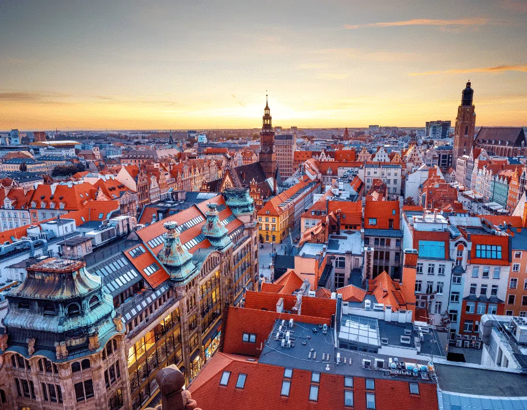
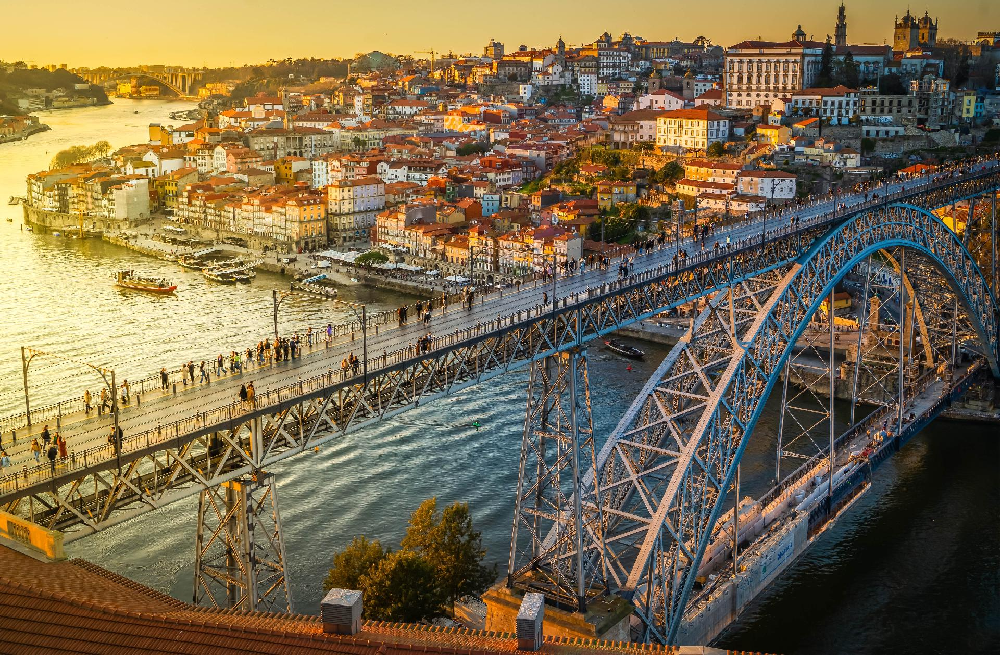
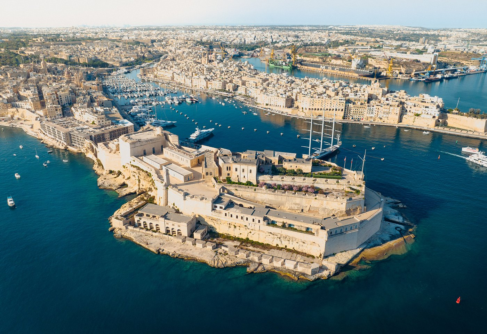

Polonia, un país por descubrir
Un recorrido por la historia, los impresionantes paisajes naturales y las ciudades medievales que hacen de Polonia un destino europeo fascinante y económico.

Un recorrido por la historia, los impresionantes paisajes naturales y las ciudades medievales que hacen de Polonia un destino europeo fascinante y económico.

Una guía esencial para recorrer Oporto: sus famosos puentes de hierro, las bodegas a orillas del Duero y el encanto de sus calles empedradas.

El secreto mejor guardado del Mediterráneo: un viaje entre ciudadelas amuralladas, puestas de sol doradas y calas de película que te atraparán.